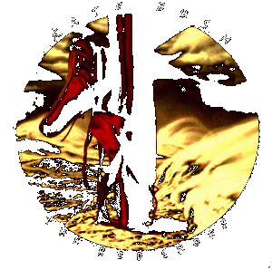

Back to the Gaffaweb Table of Contents

Written by Love-Hounds
compiled and edited
by
Wieland Willker
August 1995

Back
to the Gaffaweb Table of Contents
This Line (Cross and Curve), at the beginning and end of
pages,
will always transport you around within Moments.
Lines within the pages will take you
to the top of that
particular page
This Line, Cross and Curve will take you
on to 0.1 - Introduction
(C) All contents are copyright by the editor
of this publication.
All rights are hereby returned to the
contributors (Lovehounds).
See "Contributors"
list.
Contact: newsgroup rec.music.gaffa
mail to: love-hounds-request@gryphon.com
Write 'subscribe' in the body of the letter